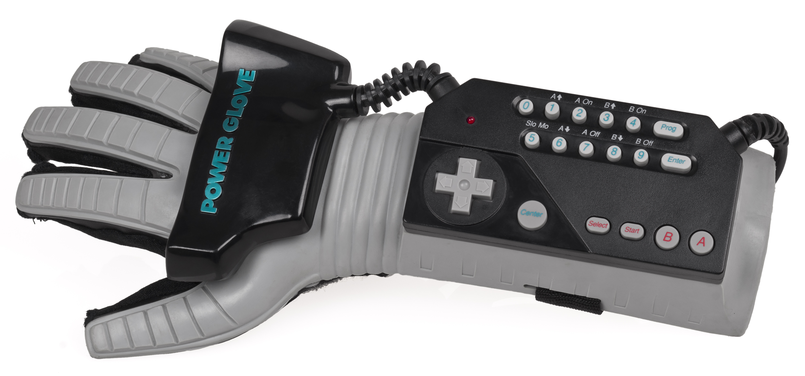
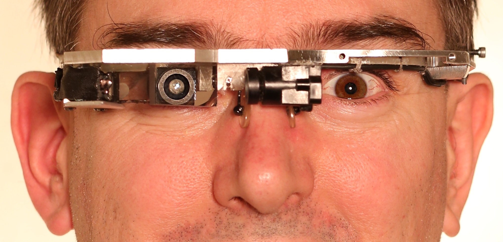
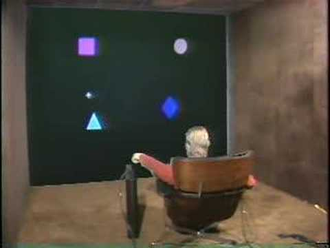
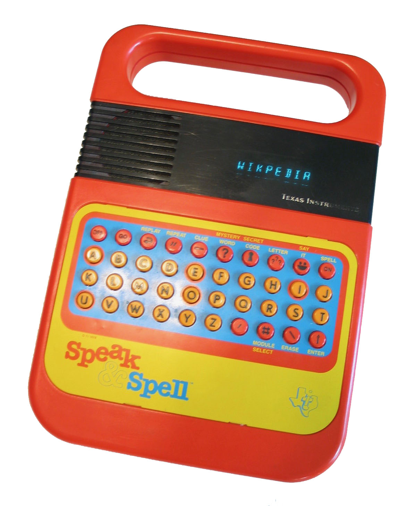
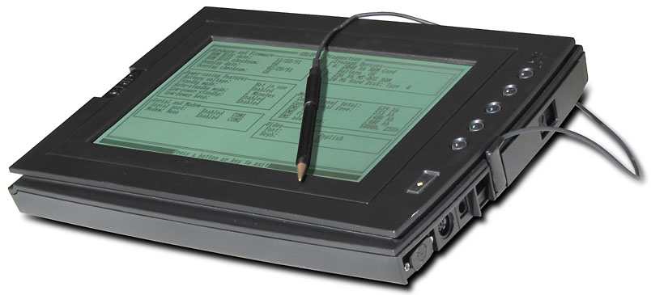
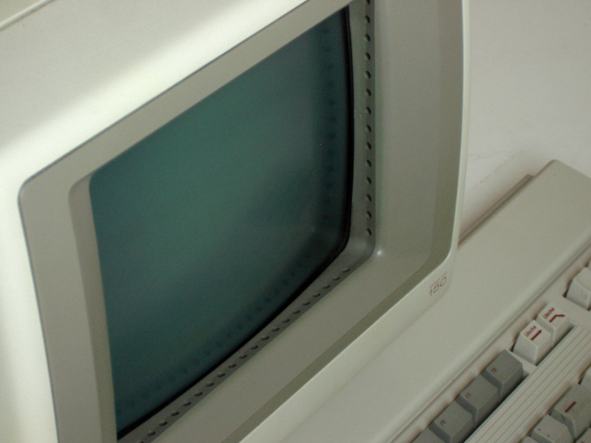
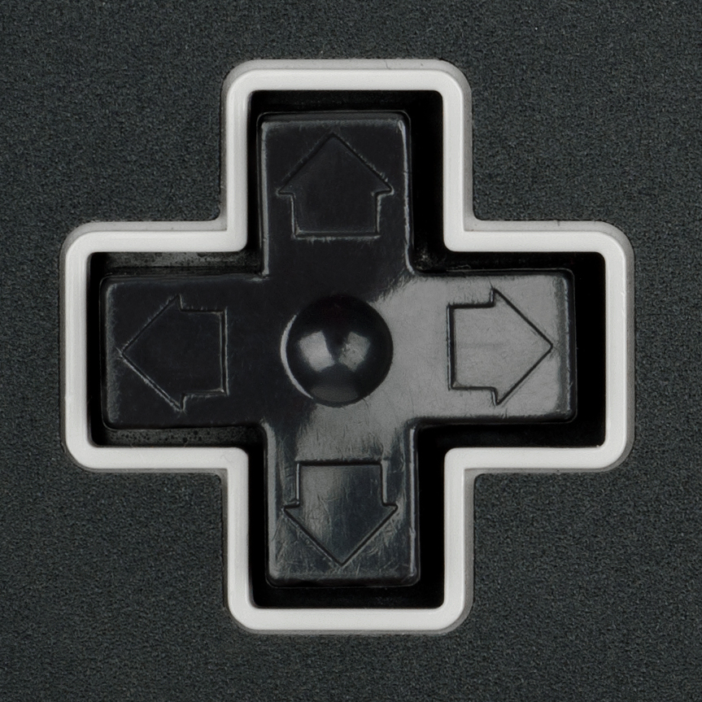
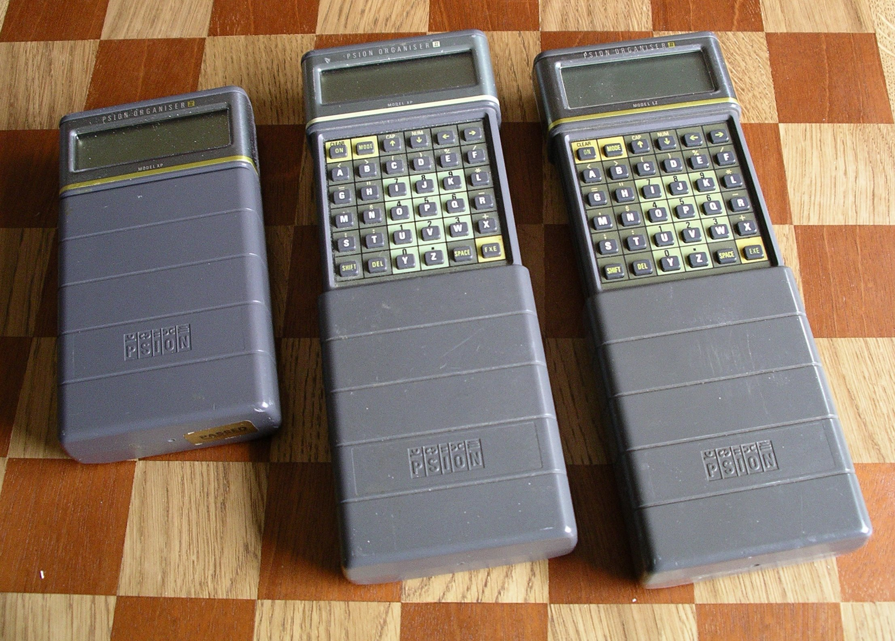
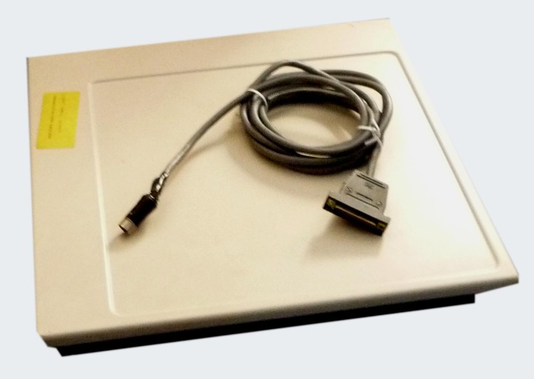
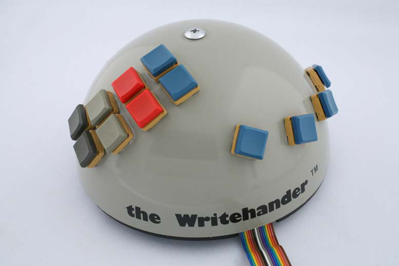

Permanent collection
All exhibits
26 artifacts recovered, 1976–1992.
 c.1983
c.1983
Hubot
The butler robot with an Atari inside

1989Power Glove
A $10,000 NASA glove, shrunk to $90
 1984
1984
Atari Mindlink
Mind control (actually eyebrow control)
 1970s–80s
1970s–80s
VIDEOPLACE
Artificial reality without goggles
 1988
1988
P300 Speller
Talking off the top of your head
 1980s
1980s
VPL EyePhone & DataGlove
The birth of commercial VR
 1990
1990
Virtuality
Networked VR in an arcade pod

1980sEyeTap
Wearable computing before it had a name
 1991
1991
The Digital Desk
Paper meets projector
 1986
1986
Mandala
Full-body VR on an Amiga

1980Put-That-There
Voice + gesture at the graphics interface

1978Speak & Spell
The first talking chip
 1976
1976
Kurzweil Reading Machine
Print made audible for the blind
Active Badge
Your location, broadcast every 10 seconds
 1992
1992
Twiddler
A keyboard in one hand

1989GRiDPad 100
First commercial tablet computer with pen input.
 1982
1982
Heathkit HERO 1
Educational robot with sonar, light, and sound sensors.

1983HP-150 Touchscreen
CRT monitor with infrared touch overlay for office PCs.
 1984
1984
KoalaPad
Pressure-sensitive touch tablet for 8-bit home computers.
 1980
1980
Microwriter
Five-key chorded portable word processor.

1985Nintendo D-pad controller
Cross-shaped directional pad replacing joysticks on consoles.
 1987
1987
Polhemus 3Space Isotrak
Magnetic 6DOF tracking sensor for 3D interaction.
 1989
1989
Poqet PC
Credit-card-sized MS-DOS computer with PCMCIA.

1986Psion Organiser II
Pocket computer with full QWERTY and expansion slots.

1977Summagraphics Bit Pad
Large electromagnetic digitizing tablet for CAD.

1978WriteHander
Twelve-key one-handed chording keyboard for left or right hand.